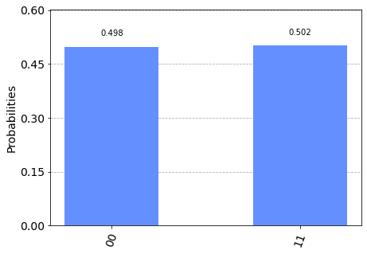

Example episode
Taken from qiskit.org, licensed under Apache License 2.0
import numpy as np
from qiskit import QuantumCircuit, transpile
from qiskit.providers.aer import QasmSimulator
from qiskit.visualization import plot_histogram
Define circuit
# Use Aer's qasm_simulator
simulator = QasmSimulator()
# Create a Quantum Circuit acting on the q register
circuit = QuantumCircuit(2, 2)
# Add a H gate on qubit 0
circuit.h(0)
<qiskit.circuit.instructionset.InstructionSet at 0x162a9ac40>
# Add a CX (CNOT) gate on control qubit 0 and target qubit 1
circuit.cx(0, 1)
<qiskit.circuit.instructionset.InstructionSet at 0x162aafe80>
# Map the quantum measurement to the classical bits
circuit.measure([0,1], [0,1])
<qiskit.circuit.instructionset.InstructionSet at 0x162ab6540>
Transpile circuit and execute it
# compile the circuit down to low-level QASM instructions
# supported by the backend (not needed for simple circuits)
compiled_circuit = transpile(circuit, simulator)
# Execute the circuit on the qasm simulator
job = simulator.run(compiled_circuit, shots=1000)
# Grab results from the job
result = job.result()
# Returns counts
counts = result.get_counts(compiled_circuit)
print("\nTotal count for 00 and 11 are:",counts)
Total count for 00 and 11 are: {'00': 498, '11': 502}
Visualize results
# Draw the circuit
circuit.draw()
┌───┐ ┌─┐
q_0: ┤ H ├──■──┤M├───
└───┘┌─┴─┐└╥┘┌─┐
q_1: ─────┤ X ├─╫─┤M├
└───┘ ║ └╥┘
c: 2/═══════════╩══╩═
0 1 # Plot a histogram
plot_histogram(counts)

Exercise
Some exercise
Description of exercise.
Do this
then do this
finally observe what happens when you do this…
Solution
Here is the solution